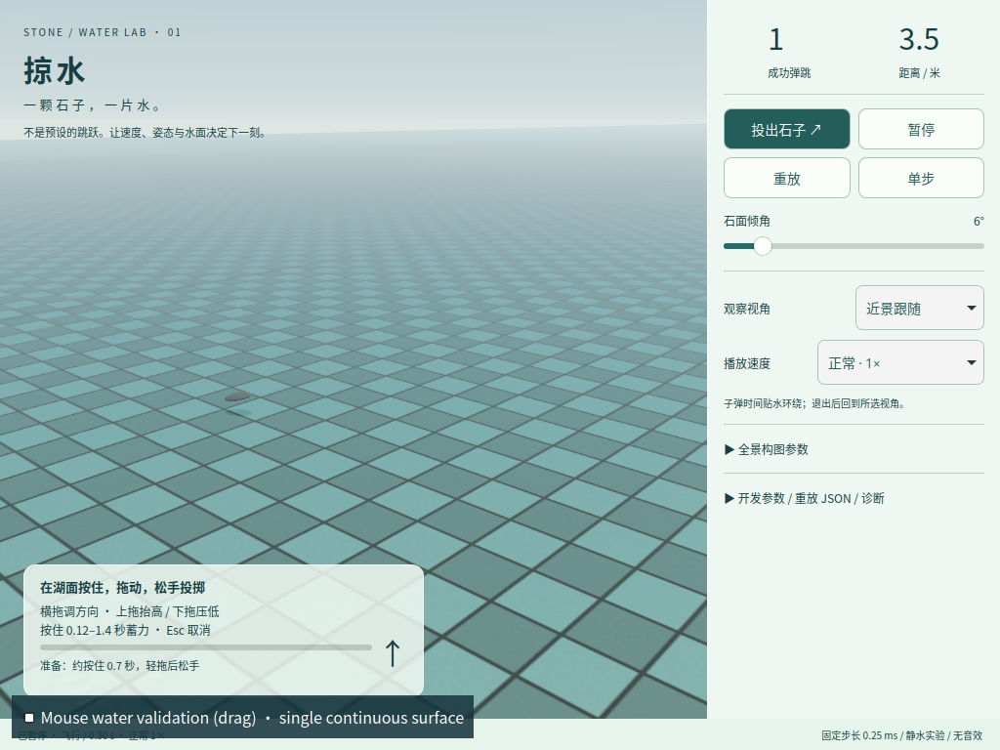

Same GPU solver for mouse and real stone; no replacement demo. Full launch snapshots, contact history, exact clocks, GPU hashes and sampled height states accompany the main screenshots.
68 pass / 0 fail / 10 explicitly retired-renderer skips. Real vertical contact reaction now reaches the GPU; numerical coupling passes, but last-contact/sink visual acceptance still FAILS. Previous images are retained as name.previous.png/json; exact new commands/quaternion are stored. See README for the old-camera-orientation caveat. Identical 480-tick GPU state at visual 4 s for normal/slow/bullet. This is a heightfield: no overturning, airborne water or breakup. Stone ripples remain faint in overview; checker calibration dominates, caustics are approximate. Images were read; visual parity is NOT claimed.
